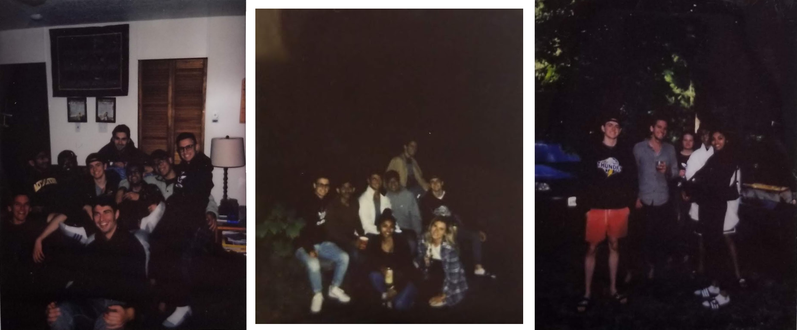

Abstract
This page on my website was created to showcase my experience during my S19 and F19 Co-op work terms in a concise, informative way. I hope that after reading this, you'll have a good understanding of the culture and type of work done at Kenna.
Kenna Technology Solutions
Kenna Technology Solutions is an "all-in-one" solutions firm providing data management, marketing, creative, and development among many other services. The Mississauga-based company primarily works for BASF, the largest chemical company in the world. Kenna's development team provides them with external and public applications, as well as maintenance and reporting of all data for BASF agriculture across Canada.

All of the Co-ops at Kenna on our last day
The Job
My position was on the development team as a Full Stack Application Developer, developing web applications for BASF and other smaller clients. I was able to exercise skills I learned in class, especially the web & database development skills from CIS*2750; JavaScript, Node.js with Express, MySQL, and Git. From the beginning of my term I was eager to learn the newer technologies the team was using, primarily Node.js and React, and took extra steps to learn these libraries outside of work hours. As a result, the Director of Application Development placed me on a team with himself to develop a BASF public site in React & Node.js. I was focused on this project for almost the entirety of my 8-month work term. It can be viewed here. I worked with multiple developers, participated in daily Scrum meetings, and was given the opportunity to take responsibility for my own parts of the project. In the Scrum meetings, the team would discuss work that needed to be done and assigned tickets to developers. For each ticket, we would create a development branch from the release branch of the code, write and test our changes, and then commit and merge them into the release build. I learned a lot about project lifecycles, proper code review and deployment procedures, and communication with other developers.
I was also eager to learn more about SQL. The development team used SQL Server Management Studio and Transact-SQL, and I became very comfortable using these technologies over my 8-month work term. In the final months, I was single-handedly responsible for the backend features of the marketing automation phase of our project. Using SQL, Node.js, and React I developed a process to record user interactions with the site and calculate a list of relevant information to email BASF clients based on their interactions.
Kenna took pride in providing the employees with lots of events, outings, and parties. In October, the development team hosted a "FedEx Day", a 24-hour hackathon to develop applications that benefit the company. I was the Team Lead for a team of 5 Co-ops, and we finished first place with our React/Node employee directory application featuring the Microsoft Graph API.
One of the events hosted by the company was a summer picnic involving professionally cooked paella, competitive games, and casual sports. The Co-ops won all of the events.
Stephen Hwang (left) deep in thought during a regular work day in the office
I was also eager to learn more about SQL. The development team used SQL Server Management Studio and Transact-SQL, and I became very comfortable using these technologies over my 8-month work term. In the final months, I was single-handedly responsible for the backend features of the marketing automation phase of our project. Using SQL, Node.js, and React I developed a process to record user interactions with the site and calculate a list of relevant information to email BASF clients based on their interactions.
Kenna took pride in providing the employees with lots of events, outings, and parties. In October, the development team hosted a "FedEx Day", a 24-hour hackathon to develop applications that benefit the company. I was the Team Lead for a team of 5 Co-ops, and we finished first place with our React/Node employee directory application featuring the Microsoft Graph API.
One of the events hosted by the company was a summer picnic involving professionally cooked paella, competitive games, and casual sports. The Co-ops won all of the events.
Me (left) and Aurtheysh Amaranath (right), a Co-op from Waterloo, winning the egg-race competition
Learning Goals and Outcomes
LITERACY - Technological Literacy - SQL
The most important goal to me was learning SQL. I had a small amount of previous experience and really enjoyed using the language to work with data. I prefer to work on the backend of applications, which involves a lot of manipulating data with SQL. My goal for this term was to learn the advanced concepts of the language and work with it on my main project. I would be able to recognize when this goal has been successful when I feel comfortable writing advanced queries, stored procedures, and functions and creating routes to them through the server. After my 8 month work term, I believe that I have gained a lot of skills in SQL and I look forward to expanding on these skills in my following work terms.
LITERACY - Technological Literacy - Node.js
Another big goal of mine while working at Kenna was to get more involved with the backends of projects and learning Node.js. I wanted to work with servers and SQL more than I wanted to work on the front end. I learned from the Udemy Node.js course the company bought and had the opportunity to work on Node.js tickets for my main project over the term. By the end of the term, I felt comfortable setting up servers, routes, controller, and connections to SQL.
LITERACY - Technological Literacy - React
An additional goal of mine during my work term was to gain experience using React. It is a very popular framework, and the skills I learn will be easily transferable to similar component-based frameworks such as Angular and Vue.js. At the start of my term, I began attending the weekly React training sessions at lunch as well as practicing problems from a React textbook. I was fortunate to be put on a React/Node project with the Director of Application Development, where most of my tickets were React based. I now feel very comfortable working with the framework and have been able to make large contributions to the project.
COMMUNICATING - Oral Communication
My final major goal while at Kenna was to gain experience working with teams of developers and communicating with the accounts team. This was my first exposure to a multi-developer team, and I wanted to learn how they can function efficiently and effectively. I also wanted to learn how projects are developed from the business side, and the necessary communication between account leaders and developers. I tried to be very involved in project discussions and would not hesitate to talk to the account team while developing the project. I feel that I've gained a lot of experience working with a large team and have developed a good rapport with the account team.
Conclusion
I am very happy with my experience at Kenna. I learned a lot about every aspect of development, teamwork, and office culture. I have been able to apply concepts learned in class to my daily job, and I'm sure that elements of what I learned as a developer will also help me in school. I have accepted an offer to return to the company part-time for the W20 semester, and full-time for the S20 semester.
At Kenna, the Co-ops grew very close over our 8-month work terms. They were a large part of why I looked forward to going into work every day. I believe that this is one of the most valuable things I got from Kenna; a network of Co-ops in similar programs who will stay in contact after the term ended.
At Kenna, the Co-ops grew very close over our 8-month work terms. They were a large part of why I looked forward to going into work every day. I believe that this is one of the most valuable things I got from Kenna; a network of Co-ops in similar programs who will stay in contact after the term ended.

Some of the Co-ops during our summer cottage trips
Acknowledgements
I was fortunate to work closely with very talented developers and team leaders. I want to earnestly thank the following people;
Werner Anders, Director of Application Development
Apurv Samant, Senior Application Developer
Brent Henry, Team Lead
Development Co-ops Nick Airdrie, Aurtheysh Amaranath, Surajpratap Goraya, Stephen Hwang, Prisha Rathi, Sukhvir Thapar
Werner Anders, Director of Application Development
Apurv Samant, Senior Application Developer
Brent Henry, Team Lead
Development Co-ops Nick Airdrie, Aurtheysh Amaranath, Surajpratap Goraya, Stephen Hwang, Prisha Rathi, Sukhvir Thapar